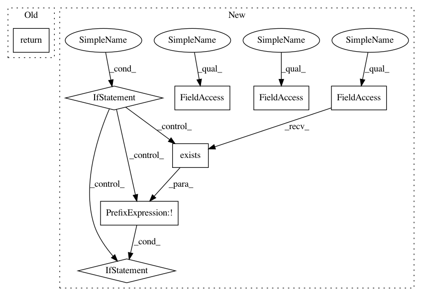

4d38da71d4776343111e75df51255e7517d2c500,python/vmaf/config.py,VmafConfig,test_resource_path,#Any#,173
Before Change
@classmethod
def test_resource_path(cls, *components):
return cls.root_path("python", "test", "resource", *components)
@classmethod
def tools_resource_path(cls, *components):
return cls.root_path("python", "vmaf", "tools", "resource", *components)
After Change
@classmethod
def test_resource_path(cls, *components):
local_path = cls.root_path("python", "test", "resource", *components)
if not os.path.exists(local_path):
if not os.path.exists(os.path.dirname(local_path)):
os.makedirs(os.path.dirname(local_path))
remote_path = os.path.join(VMAF_RESOURCE_ROOT, "python", "test", "resource", *components)
urllib.request.urlretrieve(remote_path, local_path)
return local_path
@classmethod
def tools_resource_path(cls, *components):
In pattern: SUPERPATTERN
Frequency: 3
Non-data size: 8
Instances
Project Name: Netflix/vmaf
Commit Name: 4d38da71d4776343111e75df51255e7517d2c500
Time: 2020-04-17
Author: zli@netflix.com
File Name: python/vmaf/config.py
Class Name: VmafConfig
Method Name: test_resource_path
Project Name: Netflix/vmaf
Commit Name: 4d38da71d4776343111e75df51255e7517d2c500
Time: 2020-04-17
Author: zli@netflix.com
File Name: python/vmaf/config.py
Class Name: VmafConfig
Method Name: test_resource_path
Project Name: pantsbuild/pants
Commit Name: 4d475b37f86f5391504468abddad5eaa619e595d
Time: 2018-09-24
Author: wisechengyi@gmail.com
File Name: src/python/pants/backend/jvm/subsystems/zinc.py
Class Name: Zinc
Method Name: dist
Project Name: matthewwithanm/django-imagekit
Commit Name: f9c4d6b500888c059dcf4547a3442e6a7a582b27
Time: 2011-09-23
Author: matthew@exanimo.com
File Name: imagekit/models.py
Class Name: ImageSpecFile
Method Name: file